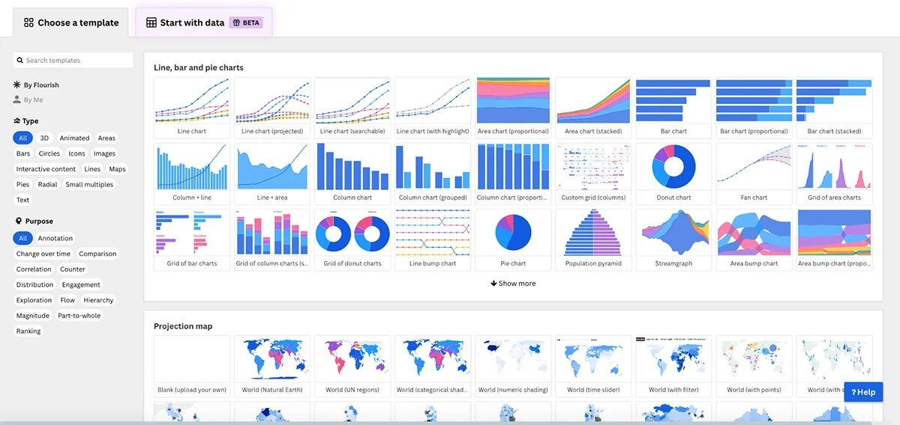
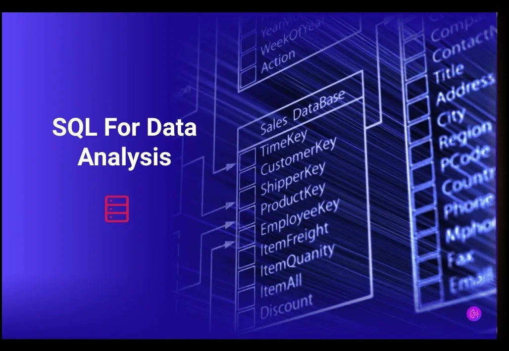
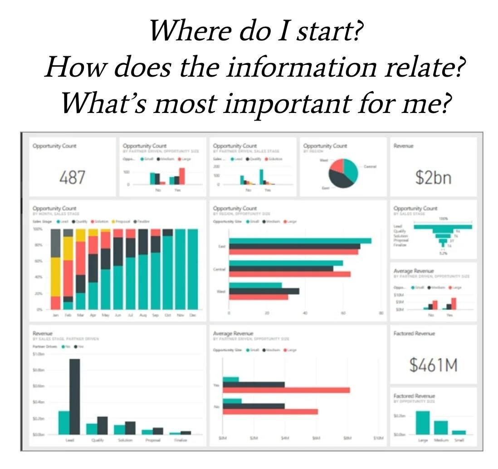

Skills

Python
Strong foundation in Python for data analysis and problem-solving, including data cleaning, transformation, and exploratory analysis using libraries such as pandas and NumPy. Experienced in building analytical workflows and applying predictive techniques to support data-driven decision making.
View Projects
Data Visualization
Skilled in designing clear and impactful visualizations using tools such as Power BI, Excel, and Python (Matplotlib). Focused on translating complex data into intuitive dashboards that support executive-level insights and strategic decision-making.
View Dashboards
SQL
Proficient in SQL for querying, managing, and analyzing structured data. Experienced in writing efficient queries, performing joins, aggregations, and data transformations to extract meaningful insights from large datasets.
View Queries
Data Storytelling
Strong ability to communicate insights through data by combining analysis with business context. Experienced in presenting findings through structured narratives, ensuring clarity, impact, and actionable recommendations for stakeholders.
View Case Studies